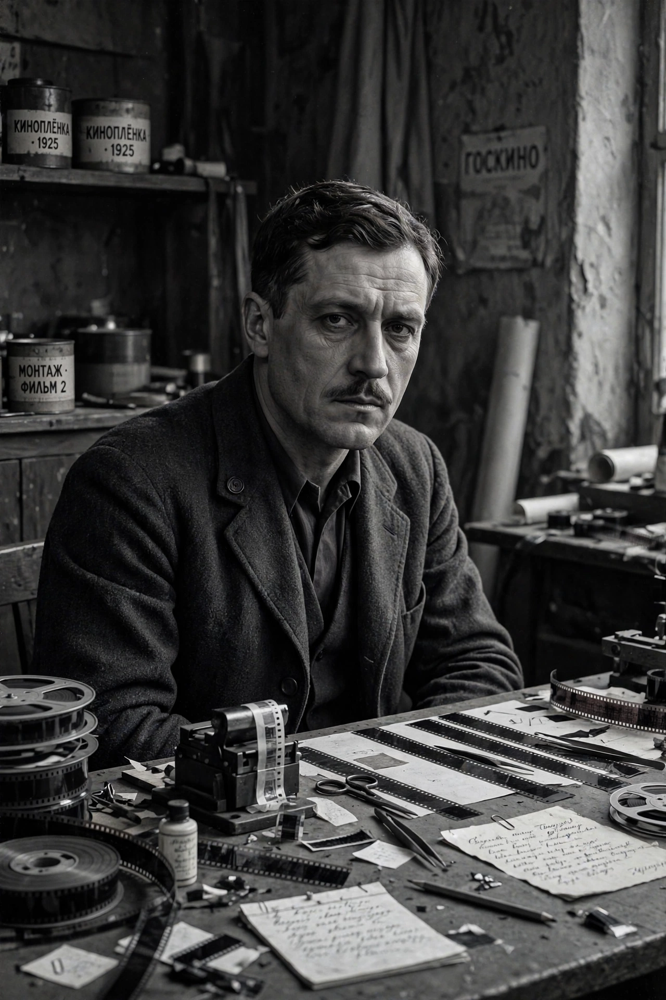

Vsevolod Pudovkin
| Vsevolod Pudovkin | |
|---|---|
 | |
| Born | Vsevolod Illarionovich Pudovkin 28 February 1893 Penza, Russian Empire |
| Died | 30 June 1953 (aged 60) Jūrmala, Latvian SSR, Soviet Union |
| Occupation | Film director, screenwriter, actor, theorist |
| Years active | 1920–1953 |
| Notable work | Mother (1926), The End of St. Petersburg (1927), Storm over Asia (1928) |
Vsevolod Illarionovich Pudovkin (Russian: Всеволод Илларионович Пудовкин; 28 February 1893 – 30 June 1953) was a Russian and Soviet film director, screenwriter and actor who, together with Sergei Eisenstein, developed the theory of montage. His trilogy of revolutionary films — Mother (1926), The End of St. Petersburg (1927) and Storm over Asia (1928) — made him one of the most celebrated directors of the silent era.
Life and work
Pudovkin studied physics and chemistry at Moscow University and served in the First World War, during which he was wounded and captured. After the Revolution he entered the State Film School and joined the workshop of Lev Kuleshov, appearing as an actor in Kuleshov's films and co-directing the comedy Chess Fever (1925). His solo breakthrough, Mother, adapted from Maxim Gorky's novel, demonstrated his approach to montage as "linkage" — building scenes from carefully observed details and emotionally expressive close-ups, in contrast to Eisenstein's "collision" of shots.
Theory and later career
Pudovkin's books Film Technique and Film Acting (English editions from 1929) became standard texts for generations of filmmakers worldwide. In the sound era he experimented with asynchronous sound in Deserter (1933) and later directed patriotic historical epics such as Suvorov (1941) and Admiral Nakhimov (1947), working within the socialist realist framework administered by the state cinema apparatus (see Goskino). His last film was The Return of Vasily Bortnikov (1953). Pudovkin died of a heart attack in Latvia in 1953.
Selected filmography
- Chess Fever (1925, with Nikolai Shpikovsky)
- Mother (1926)
- The End of St. Petersburg (1927)
- Storm over Asia (1928)
- Deserter (1933)
- Suvorov (1941)
- Admiral Nakhimov (1947)